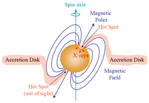

If the compact object in an X-ray binary is a neutron star with a powerful magnetic field, the gas accreted from the companion star will be channelled to the magnetic poles of the neutron star. This forms X-ray emitting hot spots which move into and out of view as the neutron star spins, giving rise to regular X-ray pulses – an X-ray pulsar.
The pulsation period of an X-ray pulsar can be as short as a 1.6 milliseconds, or can be more than 10 minutes in length. The very long period X-ray pulsars usually have strong magnetic fields which are able to capture the wind from the companion star. This causes the pulsar to decrease its rate of rotation (spin-down) through torques exerted on its magnetosphere.
In addition, and unlike radio pulsars which are all spinning down due to energy losses in the form of relativistic particles and magnetic dipole radiation, some X-ray pulsars have been found to be increasing their rate of spin (spinning up). Others have relatively stable spin rates or may show erratic behaviour with alternating periods of spin-up and spin-down. This difference in the spin behaviour between radio pulsars and X-ray pulsars arises because X-ray pulsars are interacting with a companion star. Radio pulsars are generally solitary objects or, if they are in a binary system, their companion is relatively inert (e.g. a white dwarf) and does not affect the spin-down.
Variations in the spin rate of X-ray pulsars arise because the pulsar can gain, lose or maintain its angular momentum depending on how the accreting material is transferred to the neutron star. They can have persistent mass transfer from Roche-lobe overflow, episodes of mass accretion (possibly due to an eccentric orbit that takes the neutron star close to the companion near periastron), or can be powered by stellar wind accretion. For a solitary radio pulsar, however, there is no such mechanism to increase or stabilise the angular momentum, it can only lose angular momentum through radiation of energy.